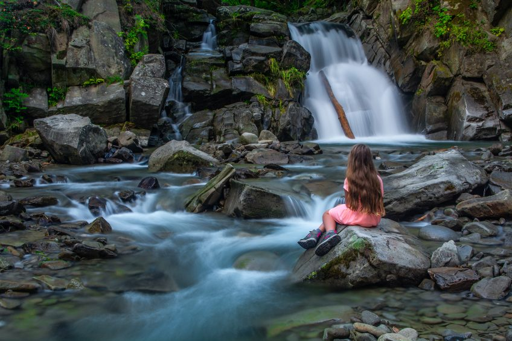

Ciekawe miejsca w Pieninach
Bacówka pod Bereśnikiem
Najbardziej spektakularny szczyt w Pieninach – Trzy Korony
Wąwóz Homole
Rezerwat „Biała Woda”
Pieniński Zamek
Spływ Dunajcem
Zamek w Czorsztynie – gotycka warownia z XIV w.
